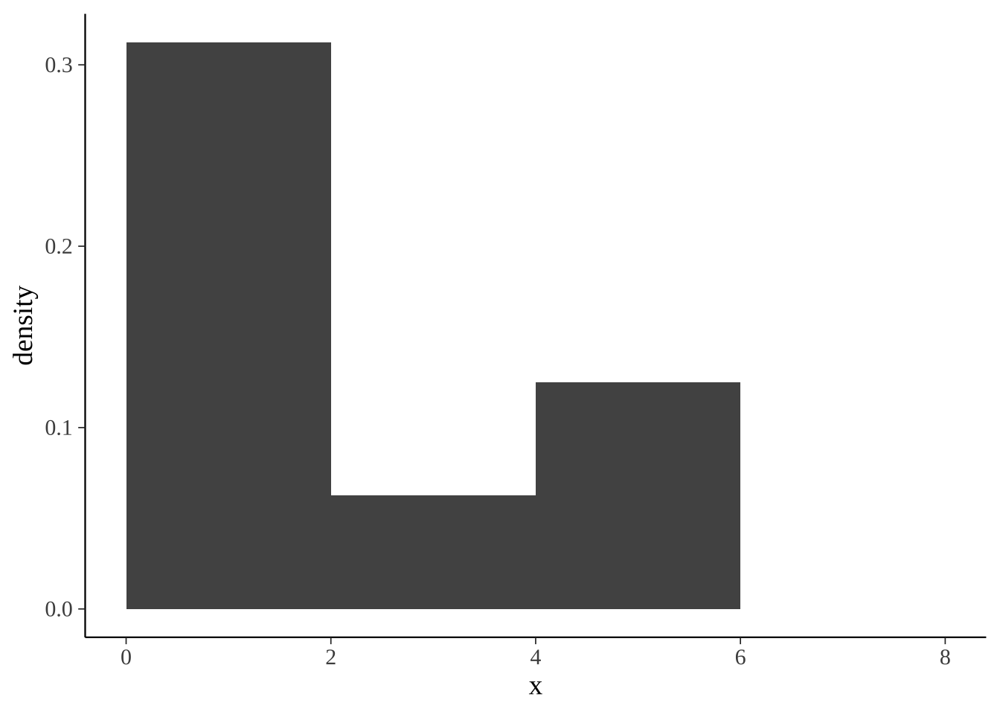
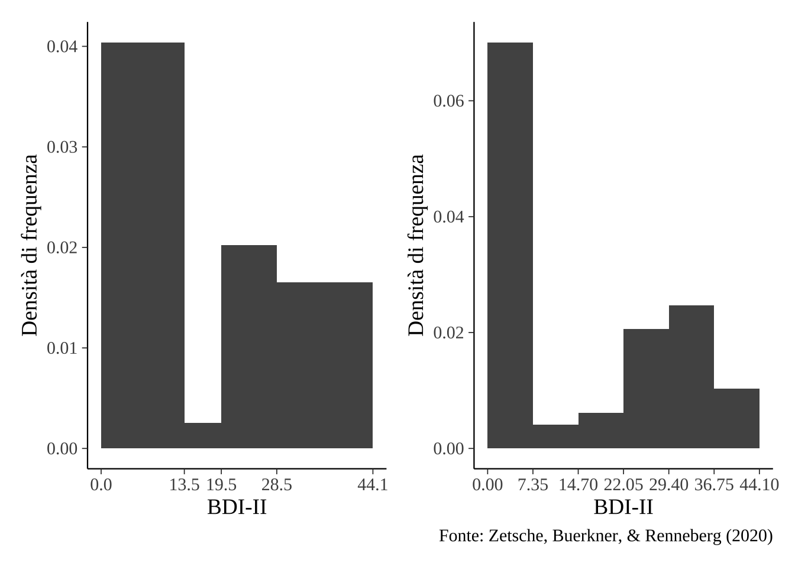

La rappresentazione grafica della distribuzione dei dati.
In questo tutorial ci poniamo il problema di costruire un istrogramma utilizzando la funzione ggplot() del pacchetto ggplot2 in R. Vedremo quali sono i limiti degli istogrammi. Concluderemo introducendo una rappresentazione alternativa, la densit della frequenza dei dati, la quale attenua i limiti degli istogrammi.
suppressPackageStartupMessages(library("tidyverse"))
theme_set(bayesplot::theme_default(base_size=14))
suppressPackageStartupMessages(library("knitr"))
suppressPackageStartupMessages(library("kableExtra"))
suppressPackageStartupMessages(library("patchwork"))
table_nums <- captioner::captioner(prefix = "Tavola")
figure_nums <- captioner::captioner(prefix = "Figura")
knitr::opts_chunk$set(fig.align = "center", fig.width=7, fig.height=5)
Iniziamo con delle considerazioni di base.
Lintervallo (a, b] si dice aperto a sinistra e chiuso a destra. Significa
\[ a < x \leq b, \]
ovvero, descrive la situazione nella quale i valori che coincidono con il limite superiore dellintervallo verranno inclusi nellintervallo, mentre i valori che coincidono con il limte inferiore dellintervanno non verranno inclusi nellintervallo.
Consideriamo questi dati:
x <- c(1, 2, 1, 1, 5, 3, 2, 6)
Supponiamo di volere i seguenti intervalli aperti a sinistra e chiusi a destra:
Per la variabile x, la distribuzione di frequenze assolute diventa:
| Intervallo | frequenza |
|---|---|
| (0, 2] | 5 |
| (2, 4] | 1 |
| (4, 6] | 2 |
| (6, 8] | 0 |
Se invece consideriamo gli intervalli chiusi a sinistra e aperti a destra, [a, b), ovvero
\[ a \leq x < b, \]
allora otteniamo una diversa distribuzione di frequenze assolute:
| Intervallo | frequenza |
|---|---|
| [0, 2) | 3 |
| [2, 4) | 3 |
| [4, 6) | 1 |
| [6, 8) | 1 |
Usiamo ora R per ottenere i risultati precedenti.
Uno dei modi possibili per calcolare le frequenze assolute quello di usare la funzione cut(). Mediante tal funzione possibile dividere il campo di variazione (ovvero, la differenza tra il valore massimo di una distribuzione ed il valore minimo) di una variabile continua x in intervalli e codificare ciascun valore x nei termini dellintervallo a cui appartiene.
Iniziamo con gli intervalli aperti a sinistra e chiusi a destra:
Possiamo ora usare la funzione table() la quale ritorna una tabella con le frequenze assolute di ciascuna modalit della variabile in input.
table(x_cat)
x_cat
(0,2] (2,4] (4,6] (6,8]
5 1 2 0 La distribuzione di frequenze per intervalli chiusi a sinistra e aperti a destra :
table(x_cat)
x_cat
[0,2) [2,4) [4,6) [6,8)
3 3 1 1 Creiamo ora un istogramma usando i valori x.
Qual laltezza della barra in corrispondeza dellintervallo (0,2]?
La base pari a 2 e larea 5/8. Dunque laltezza
(5/8) / 2
[1] 0.3125Usiamo ggplot()
x %>%
as.data.frame() %>%
ggplot(aes(x = x)) +
geom_histogram(
aes(y = ..density..),
breaks = c(0, 2, 4, 6, 8)
)

Questo ci conferma che, di default, ggplot() usa intervalli chiusi a destra.
Cambiamo ora il default e specifichiamo intervalli chiusi a sinistra:
x %>%
as.data.frame() %>%
ggplot(aes(x = x)) +
geom_histogram(
aes(y = ..density..),
breaks = c(0, 2, 4, 6, 8),
closed = "left"
)
Considereremo ora i dati di Zetsche, Burkner, & Renneberg (2020) e ci poniamo il problema di descrivere la distribuzione dei punteggi BDI-II dei 67 partecipanti. Uno di essi non ha risposto e quindi c un dato mancante.
Creiamo la varibile bdi che contiene i valori del valore BDI-II dei 66 soggetti:
bysubj <- data.frame(
bdi <- c(
0, 0, 0, 0, 0, 0, 0, 0, 0, 0, 0, 0, 0, 0, 0, 0, 0, 1,
1, 1, 1, 1, 1, 1, 1, 2, 2, 2, 2, 3, 3, 3, 5, 7, 9, 12, 19,
22, 22, 24, 25, 25, 26, 26, 26, 27, 27, 28, 28, 30, 30, 30, 31, 31, 33,
33, 34, 35, 35, 35, 36, 39, 41, 43, 43, 44
)
)
I seguenti cut-off vengono usati per interpretare il BDIII:
Calcoliamo le frequenze assolute per i seguenti intervalli aperti a destra: [0, 13.5), [13.5, 19.5), [19.5, 28.5), [28.5, 63). Esaminando i dati, vediamo che 36 soggetti cadono nella prima classe. Dobbiamo per eseguire questoperazione di conteggio utilizzando R.
bysubj$bdi_level <- cut(
bysubj$bdi,
breaks = c(0, 13.5, 19.5, 28.5, 63),
include.lowest = TRUE,
labels = c(
"minimal", "mild", "moderate", "severe"
)
)
bysubj$bdi_level
[1] minimal minimal minimal minimal minimal minimal minimal
[8] minimal minimal minimal minimal minimal minimal minimal
[15] minimal minimal minimal minimal minimal minimal minimal
[22] minimal minimal minimal minimal minimal minimal minimal
[29] minimal minimal minimal minimal minimal minimal minimal
[36] minimal mild moderate moderate moderate moderate moderate
[43] moderate moderate moderate moderate moderate moderate moderate
[50] severe severe severe severe severe severe severe
[57] severe severe severe severe severe severe severe
[64] severe severe severe
Levels: minimal mild moderate severetable(bysubj$bdi_level)
minimal mild moderate severe
36 1 12 17 Per ottenere le frequenze relative sufficiente dividere ciascuna frequenza assoluta per il numero totale di osservazioni:
minimal mild moderate severe
0.54545455 0.01515152 0.18181818 0.25757576 In questo modo abbiamo ottenuto le distribuzioni di frequenza assoluta e relativa.
| Limiti delle classi | Frequenza assoluta | Frequenza relativa |
|---|---|---|
| [0, 13.5) | 36 | 36/66 |
| [13.5, 19.5) | 1 | 1/66 |
| [19.5, 28.5) | 12 | 12/66 |
| [28.5, 63] | 17 | 17/66 |
Listogramma delle frequenze assolute disegna un rettangolo sopra ogni intervallo specificato, la cui altezza corrisponde alla frequenza assoluta della classe. Per esempio, alla classe [0, 13.5] abbiamo associato la frequenza assoluta di 36. Nellistogramma delle frequenze assolute laltezza del primo rettangolo sar dunque uguale a 36.
Nellistogramma delle frequenze relative viene invece rappresentata la frequenza relativa delle classi: larea di ogni rettangolo proporzionale alla frequenza relativa della classe. Come si trova laltezza delle barre dellistogramma in tali circostanze? Per la classe [0, 13.5), ad esempio, la frequenza relativa 36/66. Tale valore corrisponde allarea del rettangolo. Dato che la base del rettangolo 13.5, laltezza sar 36/66 / 13.5, ovvero {r 36/66 / 13.5}. E cos via per le altre barre dellistogramma.
ggplot()p1 <- bysubj %>%
ggplot(aes(x = bdi)) +
geom_histogram(
aes(y = ..density..),
breaks = c(0, 13.5, 19.5, 28.5, 44.1) # il valore BDI-II massimo 44
) +
scale_x_continuous(breaks=c(0, 13.5, 19.5, 28.5, 44.1)) +
labs(
x = "BDI-II",
y = "Densit di frequenza"
)
p1
Figure 1: Figura 1: Istogramma delle frequenze relative creato con ggplot().
pi comune, per, utilizzare classi di ampiezza uguale.
p2 <- bysubj %>%
ggplot(aes(x = bdi)) +
geom_histogram(
aes(y = ..density..),
breaks = seq(0, 44.1, length.out = 7)
) +
scale_x_continuous(breaks=c(0.00, 7.35, 14.70, 22.05, 29.40, 36.75, 44.10)) +
labs(
x = "BDI-II",
y = "Densit di frequenza",
caption = "Fonte: Zetsche, Buerkner, & Renneberg (2020)"
)
p1 + p2

Come abbiamo notato sopra, uno dei limiti degli istogrammi che il profilo dellistogramma arbitrario: a seconda del numero e dei limiti delle classi che vengono scelte, cambiano sia il numero che la forma delle barre dellistogramma.
Il problema precedente pu essere alleviato utilizzando una rappresentazione alternativa della distribuzione di frequenza, ovvero la stima della densit della frequenza dei dati. Un modo semplice per pensare a tale rappresentazione, che in inglese va sotto il nome di density plot, quello di immaginare un grande campione di dati, in modo che diventi possibile definire un enorme numero di classi di equivalenza di ampiezza molto piccola, le quali non risultino vuote. In tali circostanze, la funzione di densit empirica non altro che il profilo `lisciato dellistogramma. La stessa idea si applica anche quando il campione pi piccolo. Un esempio fornito nella figura seguente.
p3 <- bysubj %>%
ggplot(aes(x = bdi)) +
geom_histogram(
aes(y = ..density..),
breaks = seq(0, 44.1, length.out = 7)
) +
geom_density(
aes(x = bdi),
adjust = 0.5,
size = 0.8,
fill = "steelblue3",
alpha = 0.5
) +
labs(
x = "BDI-II",
y = "Densit di frequenza"
)
p3
Figure 2: Figura 3: Istogramma delle frequenze relative con sovrapposta la stima della densit della frequenza dei dati.
Guardando il grafico della densit della frequenza dei dati possiamo notare che ci sono due valori che tendono a ricorrere pi spesso nella distribuzione dei punteggi del BDI-II. Il primo valore tipico di poco superiore allo zero. Il secondo valore tipico allincirca uguale a 25. Tali valori tipici si chiamano mode. Nel caso presente sensato che una moda della distribuzione corrisponda ad un valore BDI-II molto basso, dato che il campione include 36 soggetti sani, e che una moda corrisponda ad un valore BDI-II di depressione moderata/severa, in quanto il campione include 30 soggetti clinicamente depressi. Ovviamente, se vogliamo rappresentare solo la densit della frequenza dei dati (senza listogramma) procediamo come indicato qui sotto.
p4 <- bysubj %>%
ggplot(aes(x = bdi)) +
geom_density(
aes(x = bdi),
adjust = 0.5,
size = 0.8,
fill = "steelblue3",
alpha = 0.5
) +
labs(
x = "BDI-II",
y = "Densit di frequenza",
caption = "Fonte: Zetsche, Buerkner, & Renneberg (2020)"
)
p4
Figure 3: Figura 4: Grafico della stima della densit della frequenza dei dati.
p3 + p4
Session info
setting value
version R version 3.6.3 (2020-02-29)
os macOS Mojave 10.14.6
system x86_64, darwin15.6.0
ui X11
language (EN)
collate it_IT.UTF-8
ctype it_IT.UTF-8
tz Europe/Rome
date 2021-03-21
Packages
package * version date lib
assertthat 0.2.1 2019-03-21 [1]
backports 1.2.1 2020-12-09 [1]
bayesplot 1.8.0 2021-01-10 [1]
broom 0.7.5 2021-02-19 [1]
bslib 0.2.4 2021-01-25 [1]
captioner 2.2.3 2015-07-16 [1]
cellranger 1.1.0 2016-07-27 [1]
cli 2.3.1 2021-02-23 [1]
colorspace 2.0-0 2020-11-11 [1]
crayon 1.4.1 2021-02-08 [1]
DBI 1.1.1 2021-01-15 [1]
dbplyr 2.1.0 2021-02-03 [1]
debugme 1.1.0 2017-10-22 [1]
digest 0.6.27 2020-10-24 [1]
distill 1.2 2021-01-13 [1]
downlit 0.2.1 2020-11-04 [1]
dplyr * 1.0.5 2021-03-05 [1]
ellipsis 0.3.1 2020-05-15 [1]
evaluate 0.14 2019-05-28 [1]
fansi 0.4.2 2021-01-15 [1]
farver 2.1.0 2021-02-28 [1]
fastmap 1.1.0 2021-01-25 [1]
forcats * 0.5.1 2021-01-27 [1]
fs 1.5.0 2020-07-31 [1]
generics 0.1.0 2020-10-31 [1]
ggplot2 * 3.3.3 2020-12-30 [1]
ggridges 0.5.3 2021-01-08 [1]
glue 1.4.2 2020-08-27 [1]
gtable 0.3.0 2019-03-25 [1]
haven 2.3.1 2020-06-01 [1]
highr 0.8 2019-03-20 [1]
hms 1.0.0 2021-01-13 [1]
htmltools 0.5.1.9000 2021-02-27 [1]
httpuv 1.5.5 2021-01-13 [1]
httr 1.4.2 2020-07-20 [1]
jquerylib 0.1.3 2020-12-17 [1]
jsonlite 1.7.2 2020-12-09 [1]
kableExtra * 1.3.4 2021-02-20 [1]
knitr * 1.31 2021-01-27 [1]
labeling 0.4.2 2020-10-20 [1]
later 1.1.0.1 2020-06-05 [1]
lattice 0.20-41 2020-04-02 [1]
lifecycle 1.0.0 2021-02-15 [1]
lubridate 1.7.10 2021-02-26 [1]
magrittr 2.0.1 2020-11-17 [1]
mime 0.10 2021-02-13 [1]
modelr 0.1.8 2020-05-19 [1]
munsell 0.5.0 2018-06-12 [1]
patchwork * 1.1.1 2020-12-17 [1]
pillar 1.5.1 2021-03-05 [1]
pkgconfig 2.0.3 2019-09-22 [1]
plyr 1.8.6 2020-03-03 [1]
promises 1.2.0.1 2021-02-11 [1]
purrr * 0.3.4 2020-04-17 [1]
R6 2.5.0 2020-10-28 [1]
ragg 1.1.2 2021-03-17 [1]
Rcpp 1.0.6 2021-01-15 [1]
readr * 1.4.0 2020-10-05 [1]
readxl 1.3.1 2019-03-13 [1]
reprex 1.0.0 2021-01-27 [1]
rlang 0.4.10 2020-12-30 [1]
rmarkdown 2.7.3 2021-03-06 [1]
rstudioapi 0.13 2020-11-12 [1]
rvest 1.0.0 2021-03-09 [1]
sass 0.3.1 2021-01-24 [1]
scales 1.1.1 2020-05-11 [1]
sessioninfo 1.1.1 2018-11-05 [1]
shiny 1.6.0 2021-01-25 [1]
showtext 0.9-2 2021-01-10 [1]
showtextdb 3.0 2020-06-04 [1]
stringi 1.5.3 2020-09-09 [1]
stringr * 1.4.0 2019-02-10 [1]
svglite 2.0.0 2021-02-20 [1]
sysfonts 0.8.3 2021-01-10 [1]
systemfonts 1.0.1 2021-02-09 [1]
textshaping 0.3.3 2021-03-16 [1]
thematic 0.1.1 2021-01-16 [1]
tibble * 3.1.0 2021-02-25 [1]
tidyr * 1.1.3 2021-03-03 [1]
tidyselect 1.1.0 2020-05-11 [1]
tidyverse * 1.3.0 2019-11-21 [1]
utf8 1.2.1 2021-03-12 [1]
vctrs 0.3.6 2020-12-17 [1]
viridisLite 0.3.0 2018-02-01 [1]
webshot 0.5.2 2019-11-22 [1]
withr 2.4.1 2021-01-26 [1]
xfun 0.22 2021-03-11 [1]
xml2 1.3.2 2020-04-23 [1]
xtable 1.8-4 2019-04-21 [1]
yaml 2.2.1 2020-02-01 [1]
source
CRAN (R 3.6.3)
CRAN (R 3.6.3)
CRAN (R 3.6.3)
CRAN (R 3.6.3)
CRAN (R 3.6.3)
CRAN (R 3.6.0)
CRAN (R 3.6.0)
CRAN (R 3.6.3)
CRAN (R 3.6.3)
CRAN (R 3.6.3)
CRAN (R 3.6.3)
CRAN (R 3.6.3)
CRAN (R 3.6.0)
CRAN (R 3.6.2)
CRAN (R 3.6.2)
CRAN (R 3.6.2)
CRAN (R 3.6.3)
CRAN (R 3.6.2)
CRAN (R 3.6.3)
CRAN (R 3.6.2)
CRAN (R 3.6.3)
CRAN (R 3.6.2)
CRAN (R 3.6.2)
CRAN (R 3.6.2)
CRAN (R 3.6.3)
CRAN (R 3.6.2)
CRAN (R 3.6.2)
CRAN (R 3.6.2)
CRAN (R 3.6.3)
CRAN (R 3.6.3)
CRAN (R 3.6.0)
CRAN (R 3.6.2)
Github (rstudio/htmltools@ac43afe)
CRAN (R 3.6.2)
CRAN (R 3.6.2)
CRAN (R 3.6.2)
CRAN (R 3.6.3)
CRAN (R 3.6.3)
CRAN (R 3.6.2)
CRAN (R 3.6.3)
CRAN (R 3.6.3)
CRAN (R 3.6.2)
CRAN (R 3.6.2)
CRAN (R 3.6.3)
CRAN (R 3.6.2)
CRAN (R 3.6.2)
CRAN (R 3.6.3)
CRAN (R 3.6.3)
CRAN (R 3.6.3)
CRAN (R 3.6.3)
CRAN (R 3.6.3)
CRAN (R 3.6.0)
CRAN (R 3.6.2)
CRAN (R 3.6.2)
CRAN (R 3.6.3)
CRAN (R 3.6.2)
CRAN (R 3.6.2)
CRAN (R 3.6.2)
CRAN (R 3.6.0)
CRAN (R 3.6.3)
CRAN (R 3.6.2)
Github (rstudio/rmarkdown@61db7a9)
CRAN (R 3.6.2)
CRAN (R 3.6.3)
CRAN (R 3.6.2)
CRAN (R 3.6.2)
CRAN (R 3.6.0)
CRAN (R 3.6.3)
CRAN (R 3.6.2)
CRAN (R 3.6.2)
CRAN (R 3.6.2)
CRAN (R 3.6.0)
CRAN (R 3.6.2)
CRAN (R 3.6.2)
CRAN (R 3.6.2)
CRAN (R 3.6.2)
CRAN (R 3.6.2)
CRAN (R 3.6.3)
CRAN (R 3.6.3)
CRAN (R 3.6.2)
CRAN (R 3.6.0)
CRAN (R 3.6.3)
CRAN (R 3.6.3)
CRAN (R 3.6.3)
CRAN (R 3.6.0)
CRAN (R 3.6.3)
CRAN (R 3.6.2)
CRAN (R 3.6.2)
CRAN (R 3.6.0)
CRAN (R 3.6.0)
[1] /Library/Frameworks/R.framework/Versions/3.6/Resources/libraryText and figures are licensed under Creative Commons Attribution CC BY 4.0. The figures that have been reused from other sources don't fall under this license and can be recognized by a note in their caption: "Figure from ...".
For attribution, please cite this work as
Caudek (2021, March 8). Il blog di Corrado Caudek: Istogramma. Retrieved from https://github.com/ccaudek/blog/posts/2021-03-08-istogramma/
BibTeX citation
@misc{caudek2021istogramma,
author = {Caudek, Corrado},
title = {Il blog di Corrado Caudek: Istogramma},
url = {https://github.com/ccaudek/blog/posts/2021-03-08-istogramma/},
year = {2021}
}